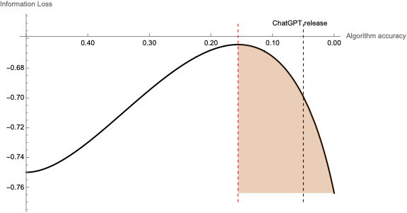

Job Market Paper
Better AI, Worse Disclosures? The Unintended Consequences of NLP on Financial Reporting
Abstract: This paper studies how the growing use of algorithms to read and produce corporate disclosure can ultimately degrade disclosure quality. Using a theoretical model, I demonstrate that when both managers and investors employ natural language processing algorithms, strategic disclosure behavior can lead to decreased information quality despite technological improvements...
View Paper
